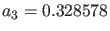
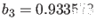
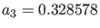
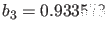
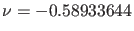
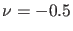
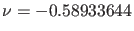
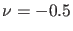
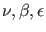

Next: Continuation of homoclinic and Up: Branch Point of Cycles Previous: Branch Point of Cycles Contents
For this example the following model is used:
We start by computing the trivial branch with fixed parameters  ,
,  , ,
,
, ,
,  , and free parameter
, and free parameter  with initially
with initially  . On this branch a Hopf point is detected for
 and a branch point of equilibria for .
. On this branch a Hopf point is detected for
 and a branch point of equilibria for .
>> p=[0.5;-0.6;0.6;0.32858;0.93358;-0.9;0]; >> [x0,v0]=init_EP_EP(@torBPC,[0;0;0],p,[6]); >> opt=contset; opt= contset(opt,'Singularities',1); >> opt=contset(opt,'MaxNumPoints',50); >> [x,v,s,h,f]=cont(@equilibrium,x0,[],opt); first point found tangent vector to first point found label = H , x = ( 0.000000 0.000000 0.000000 -0.589336 ) First Lyapunov coefficient = -4.563631e-001 label = BP, x = ( 0.000000 0.000000 0.000000 -0.500000 ) elapsed time = 0.3 secs npoints curve = 50
These computations can be done by running the script testtorBPC4.
From the Hopf point we start the computation of a curve of limit cycles, using 25 test intervals and 4 collocation points. This is clearly a branch of symmetric solutions of (87); we detect one LPC and two BPC, see Fig. 28.
>> x1=x(1:3,s(2).index);p(6)= x(end,s(2).index);ap = 6; >> [x0,v0]=init_H_LC(@torBPC,x1,p,ap,0.0001,25,4); >> opt=contset; opt= contset(opt,'Singularities',1); >> opt=contset(opt,'Multipliers',1); >> opt=contset(opt,'MaxNumPoints',150); >> opt=contset(opt,'Adapt',5); >> [xlc,vlc,slc,hlc,flc]=cont(@limitcycle,x0,v0,opt); first point found tangent vector to first point found Limit point cycle (period = 8.426472e+000, parameter = -5.843348e-001) Normal form coefficient = 1.553595e-001 Branch Point cycle(period = 8.689669e+000, parameter = -5.870290e-001) Neimark-Sacker (period = 8.743033e+000, parameter = -5.881194e-001) Neutral saddle elapsed time = 30.2 secs npoints curve = 150 >> plotcycle(xlc,vlc,slc,[1 2]);
These computations can be done by running the script testtorBPC5.
We continue the secondary cycle branch passing through the BPC point. From Fig. 29 it is clear that in the secondary cycle the symmetry is broken.
>> [x1,v1]=init_BPC_LC(@torBPC,xlc,vlc,slc(3),25,4,1e-6); >> opt=contset(opt,'MaxNumPoints',50); >> opt=contset(opt,'Backward',1); >> [xlc1,vlc1,slc1,hlc1,flc1]=cont(@limitcycle,x1,v1,opt); first point found tangent vector to first point found Neimark-Sacker (period = 8.794152e+000, parameter = -5.916502e-001) Normal form coefficient = -8.661266e-003 Period Doubling (period = 9.266303e+000, parameter = -6.149552e-001) Normal form coefficient = -6.374237e-003 elapsed time = 13.6 secs npoints curve = 50 >> plotcycle(xlc1,vlc1,slc1,[1 2]);
These computations can be done by running the script testtorBPC6.
Using the code for the continuation of generic BPC points with three free parameters  we continue the curve of non-generic BPC points, where
>> [x1,v1]=init_BPC_BPC(@torBPC,xlc,slc(3),[1 6 7],25,4,ap); >> opt=contset(opt,'MaxNumPoints',200); >> [xbpc,vbpc,sbpc,hbpc,fbpc]=cont(@branchpointcycle,x1,v1,opt); first point found tangent vector to first point found elapsed time = 158.1 secs npoints curve = 200 >> plotcycle(xbpc,vbpc,sbpc,[1 2]);
These computations can be done by running the script testtorBPC7.